2014-08-29 19:35:00
一年一度的上合組織（上海合作組織）軍事演習正在進行之中。今年輪到中共主辦，共軍希望展示剛剛擴建升級的朱日和基地，所以決定在那兒舉行。俄軍來了一個1000人的合成兵種戦鬥羣，中亞諸國各自送了营級或連級的單位，地主國不但派出了一個5000人的加强旅，而且包辦了客軍的後勤補給，頗有炫耀的意味。
這個加强旅來自共軍最精銳的北京衛戍部隊第38集團軍，裝備了中共陸軍最先進的各式武器，其中的許多地面車輛在此前只有在鐡路或公路上被運送的照片，所以這次演習的畫面很有意思，在此和大家分享。
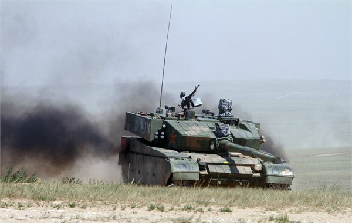
在地面車輛中，最重要的當然是坦克。38軍是共軍序列中唯一裝備了最新的99式三期大改型號的。99式三期大改換裝了全新的炮塔，外觀上與前期的99式頗有不同。我通常靠其正面左側（照片裡的右手邊）的外形來識别：那裡的複合裝甲表面低平，以配合新增的大型觀瞄鏡。觀瞄鏡上方的雷射主動防御系統（亦即當AH64準備對其發射雷射制導的地獄火飛弹時，99式會射出更强的雷射來摧毁AH64的光電瞄準儀；即使是無制導，電視制導或線導的攻撃，一般也必須先用雷射測距，99式就能在對方武器發射之前摧毁其光電器材）太過厲害，有可能誤傷友軍，似乎用膠帶包得密密實實的。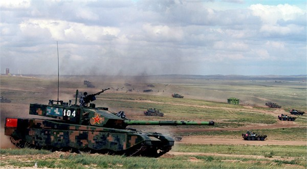
99式三期大改使用了仿自德國的1500匹馬力柴油機，功率與M1A2和豹二A7相當，但重量略輕，所以機動力居世界首位（根據瑞典陸軍20年前的評估，法國的Leclerc其馬力有灌水之嫌，實際機動力還不如M1）。99式的複合裝甲為原本來自豹二（共軍在1980年代引進了幾輛豹二坦克做為技術參考）的間隙式合金裝甲大幅升級而成，防護力超過1000公厘RHAe（Rolled Hardened Armor equivalent），比豹二A7的940公厘和M1A2SEP的960公厘還要高。其125公厘口徑ZPT-98滑膛炮，一般西方媒體以為是仿製蘇聯的2A46坦克炮，其實共軍只拷貝了2A46的自動裝弹機，ZPT-98是中共利用1980年代引進的瑞士預壓製鋼技術自行開發的，最新改型的性能超過了德國Rheinmetall的L55 120公厘坦克炮，使用貧鈾（Depleted Uranium）長桿脫殼穿甲弹（APFSDS，Armor-Piercing Fin-Stabilized Discarding-Sabot）時在2000公尺距離上仍能撃穿1000公厘RHAe以上的裝甲，也是世界之冠。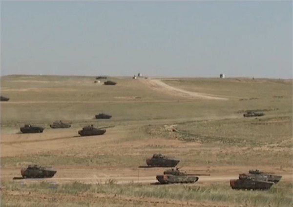
99式三期大改和WZ-502G（此為厰商編號，共軍編號未知，可能是ZBD04A）步兵戦車（IFV，Infantry Fighting Vehicle）展開衝撃隊型。除了世界领先的機動力，防護力和火力之外，99式三期大改還配備有一流的無線網絡，先進的紅外線觀瞄設備和獨一無二的雷射主動防禦系統，因此其造價約為200多萬美元，比96A式高出不只一倍（勇虎式坦克造價350萬美元，性能只與老掉牙的59式改型相當；没自己的技術就只好任人宰割）。共軍只有在適合重型坦克集群作戦的北京軍區和瀋陽軍區部署了99式。面對台湾的南京軍區部署的是96A式中型坦克。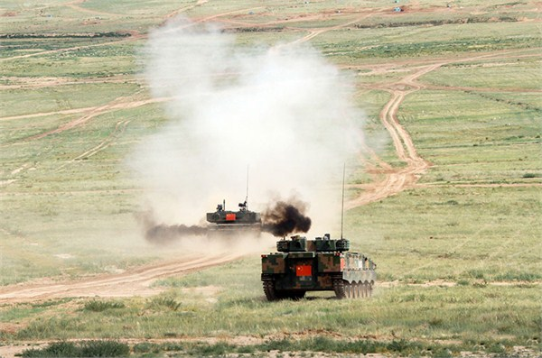
WZ-502G的背面照，背景是一輛99式在行進間射撃。WZ-502是共軍在1990年代末期引進俄國BMP3步戦車炮塔裝在自行開發的車體而成，第一代的共軍編號是ZBD97，2004年小改之後，型號叫ZBD04，是目前共軍的主要履帶式步戦車。ZBD04具有世界第一的水上速度，火力則有世界领先的100公厘+30公厘雙管炮，但是防護力頗有問题，正面裝甲只能抵抗25公厘穿甲弹（而國軍仍舊浪費了十幾年和無數的预算準備為雲豹裝甲車配備25公厘炮，真是腦残之極），所以共軍在對其升級改進時，犧牲了其渡海能力（但是仍能在無準備狀况下直接渡河），增强裝甲到能抵御30公厘炮弹的地步，重量也從20公噸增加到24公噸，不過引擎因不須噴水，功率有相應的增加，所以機動性能没有下降。德國最新的Puma步戦車已經能抵御常見的RPG（Rocket-Propelled Grenade，火箭弹），不過共軍不願讓步戦車增肥到30公噸以上，所以將來WZ-502G可能會配備主動防御導弹。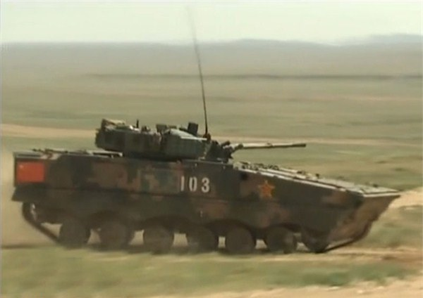
WZ-502G的側面照。其新型焊接裝甲清晰可見。與舊式的ZBD04相比，其正面的Glacis Plate（車體前面上方的倾斜裝甲板）有了明顯的斜度，這是因為WZ-502G不再須要航渡三級海况，可以改用防護力較高的倾斜裝甲（Sloped Armor）。其側面的波浪形防護板也是個明顯的特癥。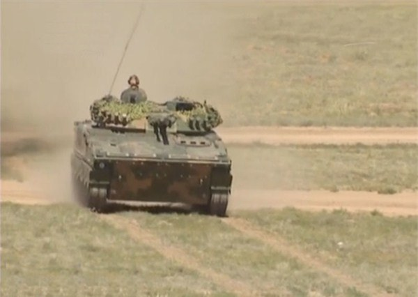
WZ-502G的正面照。可以看出其引自BMP3的100公厘+30公厘並列雙管炮，和新式的大型觀瞄設備。在裝甲車輛的火力，防護力和機動力折中選擇上，共軍基本上尋求均衡發展，必要時犧牲機動力，更必要時則犧牲一點防護力，火力享有最高優先。所以不只是99式改型，連最新的96A和WZ-502G都裝上了最先進也最昂貴的上反穩像式瞄導合一觀瞄鏡組加配紅外線熱像儀。勇虎式坦克用的是25年前M1原型配備的擾動式火控系統，比上反穩像式落後了两代，比舊型的99式用的下反穩像式落後了一代。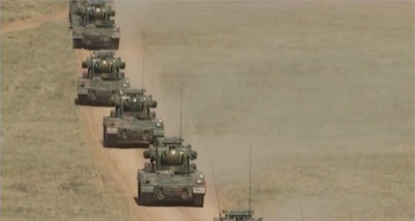
針對AH64這種武裝直升機，共軍重裝集團軍的機動防空是靠着PGZ-07式履帶式雙管35公厘自行防空炮。這些35公厘炮源自1980年代引進的瑞士Oerlikon防空炮，國軍也有裝備，叫做35快炮。不過共軍已經對其進行了多次升級改進，首先是研發了自動裝弹機，後來搭配了新雷達和光電系統，裝在通用中型履帶車上，成為99式的標準護衛。最新的改型是為了輕裝旅開發的裝在8X8輪式步戦車（即下列的ZBL08所用的通用底盤）上的單管型號，重新設計了炮膛，射速與雙管炮齊平，不過還没有批量生產。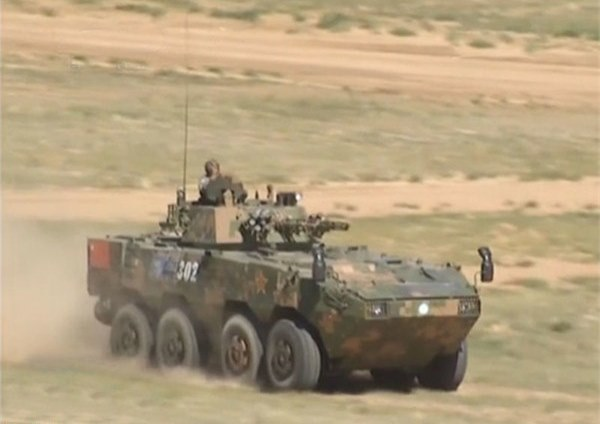
ZBL08，是共軍8X8輪式裝甲車系列的基本戦鬥型號，輕裝旅的骨幹，主炮為30公厘機關炮。在重裝集團軍裡，主要執行偵察搜索任務。中共的軍用鋼材已有長足的進步，裝甲車底盤没有雲豹之類的龜裂問题。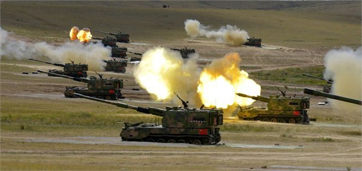
PLZ05，共軍重裝集團軍裡的標準155公厘榴弹炮。外銷型為52倍徑，自用型為54倍徑。其射程和精度都達到了或超過了德國的Panzerhaubitze 2000的水準，只在射速上稍有不及；美軍和國軍的M109系列就不用提了。其實所有現代的榴弹炮都源自加拿大的弹道天才Gerald Bull所發明的ERFB技術（Extended Range，Full Bore），他的原始設計叫GC-45，後來奥地利和南非分别商品化為GHN-45和G-5榴弹炮。共軍在1980年代自奥地利引進了這項技術，發現ERFB的真正最佳倍徑在52以上，但是Bull受1970年代的技術限制，只把倍徑從以往的39提高到45。共軍的第一步是仿製GHN-45，履帶化後的結果叫做PLZ45，近年來已經外銷到科威特、沙烏地阿拉伯和阿爾及利亞，口碑很好。第二步是完全消化吸收ERFB的精髓，自行設計製造世界领先的155公厘榴弹炮。PLZ05是這型新式54倍徑榴弹炮的重裝履帶型。共軍的輕裝部隊則裝備類似法國CAESAR（CAmion Equipe dun Systeme d'ARttilerie）系統的卡車炮。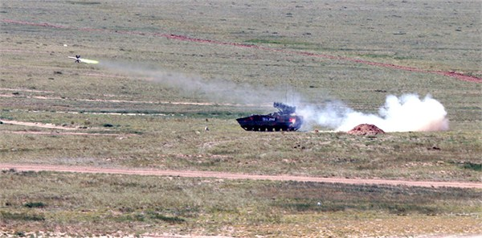
AFT-10反坦克導弹的專用履帶式發射車。AFT-10是光纖制導的重型反坦克導弹，與德軍的Polyphem飛弹相似。目前的謠言是射程只有10公里左右，不過我個人覺得這不可信；中共的火箭發射藥配方儘略次於美國，和俄國，以色列和西歐在同一個檔次，而國際上這類射後鎖定的電視導引飛弹射程自25公里至60公里不等，中共再不濟，這型全新的導弹也應該有25公里的射程。不論如何，AFT-10和它專用的履帶式發射車（從照片上看來是WZ-502G的衍生型）是第一次實件曝光。在戦場上，AFT-10會躲在99式和WZ-502G之後，利用其較長的射程，打撃敵方的裝甲車輛。由於光纖可以將紅外線影像實時傳回發射車，這類導弹具有發射後鎻定的能力，可以打撃敵後隱蔽的目標；尤其是如Panzerhaubitze 2000這類的新型遠程自走榴弹炮，具有打了就跑的能力，傳統的反炮兵雷達只能對其發射地點進行定位，必須使用AFT-10這様的光纖制導導弹才能將其在轉移陣地的過程中撃毁。【後註一】《簡氏防務周刊》（Jane's）在九月初報導了AFT-10在這次演習中的出現；文内提到中國航天科工集團公司（CASIC）在2012年就開始推銷AFT-10的外銷卡車版，CM-501G，射程70公里。顯然自用的AFT-10其性能不可能比外銷版的縮水，所謂的10公里只是保密用的烟幕。現代的遠程榴弹炮射程普遍在50公里左右，70公里的射程對光纖制導導弹來說是很合理的。
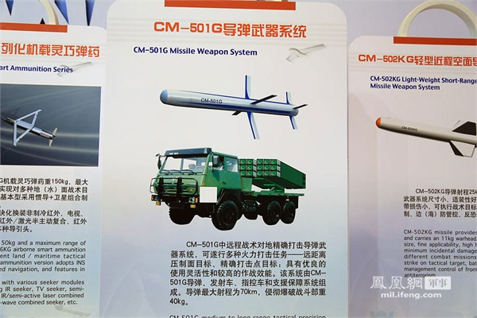
CM-501G的廣告板
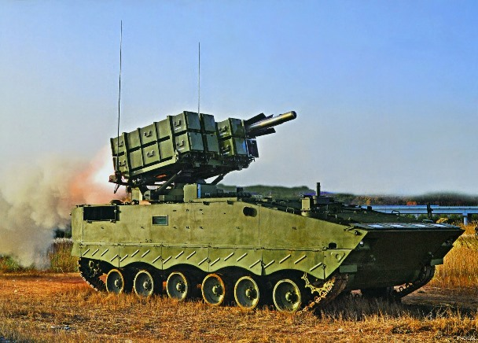
2014年十月出現的AFT-10公關照片。【後註二】共軍把火力放在裝甲車輛設計的第一優先，並不只是我的揣測；99式坦克的總設計師祝榆生生前也是這麼說的。祝榆生，四川重慶人，剛於2014年十月23日去世於北京。
【後註三】AFT-10在2015年九三閱兵式中出現，已改稱為紅箭10型；官方資料仍號稱射程只有10公里，或許它是CM-501G的縮小型吧。99式三期大改被命名為ZTZ-99A式，引擎功率被證實為1600馬力，顯然中共的技術人員對它做了改進。WZ-502G則命名為ZBD-04A。